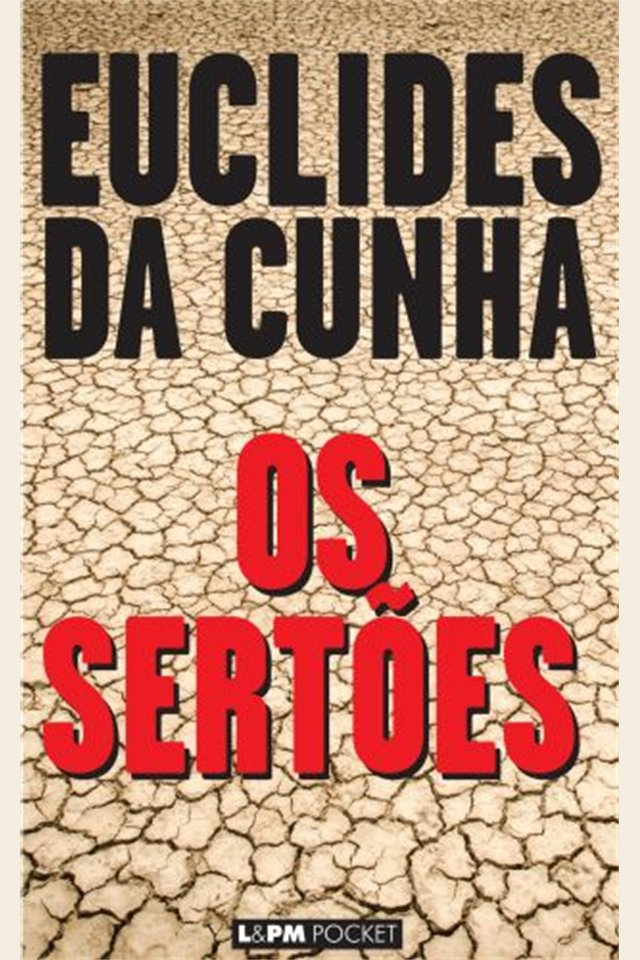

Em uma frase
A obra descreve o sertão, interpreta seus habitantes e narra a destruição do arraial de Canudos.
Mistura de reportagem, ensaio e literatura, a obra interpreta a Guerra de Canudos e denuncia a violência do Estado brasileiro.

Euclides parte de ideias cientificistas de seu tempo, mas sua escrita também revela espanto diante do massacre de Canudos.
A obra descreve o sertão, interpreta seus habitantes e narra a destruição do arraial de Canudos.
Divide-se em “A terra”, “O homem” e “A luta”, indo do ambiente ao conflito militar.
O texto combina preconceitos científicos da época com denúncia da brutalidade republicana.
Como não é romance tradicional, o melhor é entender suas três partes.
Euclides descreve clima, relevo, seca e isolamento. A paisagem ajuda a explicar as dificuldades da região.
O autor interpreta o sertanejo com categorias científicas hoje problemáticas, mas também reconhece sua força e resistência.
O arraial liderado por Antônio Conselheiro é visto como ameaça pela República. Expedições militares fracassam antes do ataque final.
A campanha termina com massacre. O tom da obra denuncia o abismo entre o Brasil oficial e o Brasil sertanejo.
Por ser ensaio-reportagem, as figuras são históricas e coletivas.
Líder religioso de Canudos, visto por seguidores como guia espiritual e pelo Estado como ameaça.
População pobre e resistente, interpretada por Euclides com admiração e limites cientificistas.
O poder oficial aparece distante do sertão e incapaz de compreender sua realidade.
Representam a força do Estado e a escalada de violência contra Canudos.
Autor-observador que parte de certas ideias de época e termina produzindo forte denúncia.
O arraial funciona como personagem coletivo e símbolo de um Brasil ignorado.
A Guerra de Canudos ocorreu entre 1896 e 1897, poucos anos após a Proclamação da República.
A obra expõe contrastes brasileiros e antecipa preocupações sociais do Modernismo.
Comunidade sertaneja formada em torno de Antônio Conselheiro, vista com suspeita pelo governo.
O texto usa teorias hoje superadas, como determinismo racial e geográfico.
Apesar dos limites, a obra registra a violência do massacre e questiona o Brasil oficial.
O Pré-Modernismo revela tensões nacionais, linguagem híbrida e crítica a problemas sociais brasileiros.
É uma obra fundamental para pensar sertão, República, violência política e formação do Brasil.
Euclides acompanhou parte da campanha como correspondente jornalístico antes de escrever o livro.
Questões tendem a explorar contexto histórico, estrutura tripartida e crítica social.